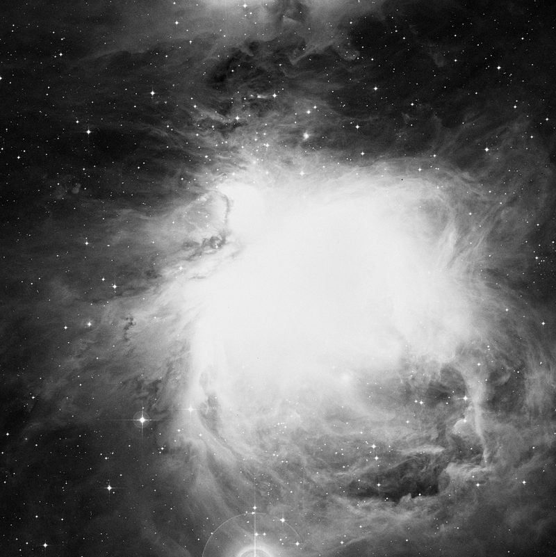
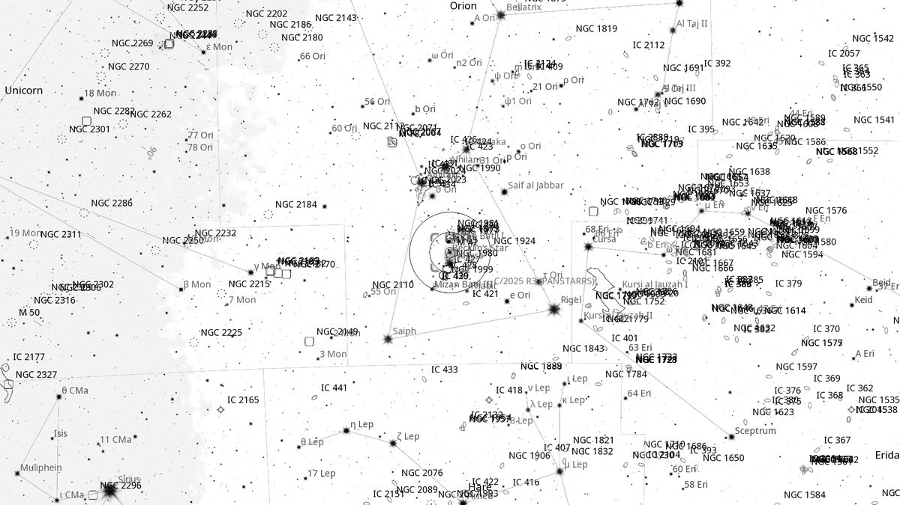
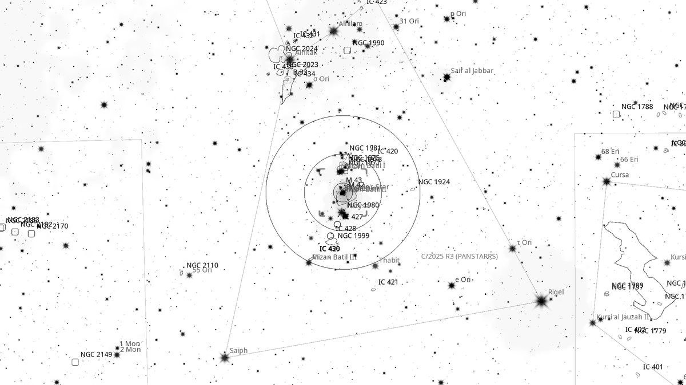
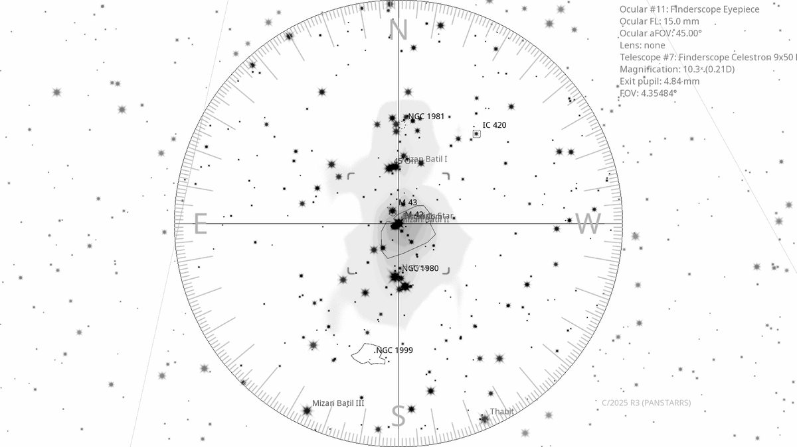
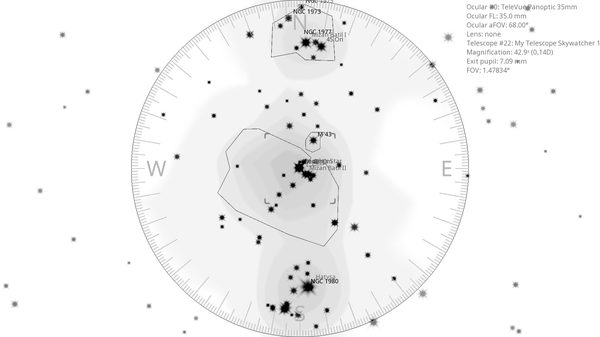

M 42 (EN)
| R.A. | Dec. | Size | Mag | SB | Cnt.St | Type | Distance | Chart |
|---|---|---|---|---|---|---|---|---|
| 05h 35m 16.4s | -05° 23′ 35.9″ | 1.5° | 4.0 | 13.1 | EN+RN; 3, 2, 3 | EN | -- | -- |

Background
M42 is the Orion Nebula — the closest large star-forming region to Earth at 1,350 light-years, and one of the brightest nebulae in the sky. Naked-eye visible; the central Trapezium cluster of hot O-type stars ionises the surrounding gas. The richness of detail across all apertures makes it the most-observed deep-sky object of all.
My Observing Notes
44-cm (Club 17.5-inch f/5): Centred almost on impulse as Orion cleared the eastern horizon. With the 31 mm low-power eyepiece, the combination of low magnification and the Club scope's aperture gave the nebula a sense of depth I had never seen before. It has been many years since I last looked through a large aperture, and I had forgotten how spectacular the views can be.(Saturday, September 2025)
References
Charts



